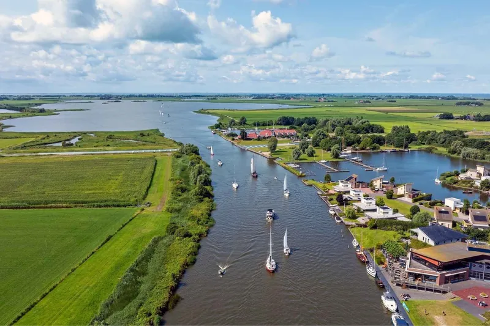

Data collection & digitisation
From scattered documents and records to structured, usable data.

Services · Water data & analysis
Analysis, advice and development on water quality issues. Tools where scale and repeatability matter; specialist work where a tailored approach is needed.
Services
Every service starts from existing data and ends with a well-founded next step: the same way of working, with the same traceability, as in our products.
From scattered documents and records to structured, usable data.
From monitoring and company data to patterns, hotspots and possible sources. View the Waterbody Source Analysis
Tailor-made work tools and dashboards for analysis, collaboration and execution.
Practical automation for documents, data and work processes.
Deciding what to measure, where and at which companies, for the most targeted results.
Prioritising companies, substances and locations for more targeted inspection.
Turning data and analysis into substantiated choices for policy and execution.
Tailored work for complex water quality questions that have no standard approach.
Examples
Not a fixed catalogue, but an idea of the kind of work we do, from analysis to dashboard.

Products
Recurring questions become tools. Some are available, others we develop with pilot partners — the status is on every card.

Integral source investigation
Investigate which industrial, agricultural, urban and other emission sources may contribute to the water quality problems in your waterbody.
Tailored data analysis, advice and specialist research for your water quality question.
Permit conditions, substances and discharge limits mapped in a structured way.

Industrial discharges
Map potential industrial discharges, prioritise relevant companies and support targeted source investigation and inspection.
From monitoring data at WWTPs and in surface water to potential sources and pathways.
Risk-based area analysis of agricultural sources: nutrients and crop protection.
Way of working
What should the answer deliver, for whom, and what data is available?
Bring sources together, assess their quality and analyse in traceable steps.
A map, dashboard, advice or report, with the explanation needed to work with it.
Get in touch
Exceedances known, but not yet the sources? We discuss your waterbody, the problem substances and the available data — and tell you honestly whether a source analysis makes sense.